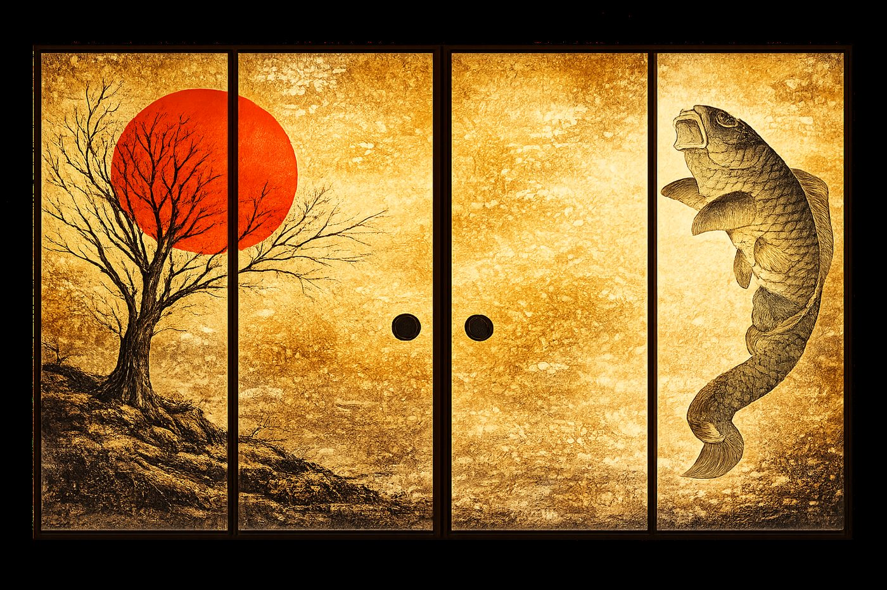

アプリが事務の時間を返し、共同の物流が雇用を生み、暮らしの支えが人をつなぎ、医療と介護が圏を重ねる。ひとつずつでは小さな力が、束ねると循環になる。
現場は運営に集中し、司令塔が支え、実装が効率を生み、投資は「地域のインフラ」に向かう。役割を分けることで、それぞれが無理なく強くなる。投資は福祉の現場へ直接は入らず、施設・物流・DXという地域の資産に向かう——公益と資本を、澄んで分ける。
公式統計は数値が2〜3年前で止まる。国勢調査などのアンカーを今日の日付へ日次で補間し、全国すべての市区町村の人口・年齢・労働・高齢化率・社福・介護・医療・薬局を推計として示す。地方の現在は、都市の未来でもある。
へき地の空床は、原因ではなく結果。若者が出ていき、担い手も利用者も減るから、施設が傾く。だから地域で一番強い産業を再生し、通年の雇用を取り戻す。地域経済がまわれば、医療も介護も続いていく——私たちはこれを「地域産業資本」と呼ぶ。